#01 MOVI_E C false positive low motion
Ambiguous Appearance
Different-category objects still produce an unusually match-like appearance and geometry score.
Frame 14 · instance 4 Frame 19 · instance 2
System Score Threshold Decision C_camera_geometry · reviewed0.9216 0.7944 match · error D_pose_aligned_geometry0.9303 0.8433 match · error
Truth: non-match Pair: 4bf52066d2e12f00cb0626da Video: 145
Gap: 5 (short) Difficulty: easy
Dynamics: static-static Visibility: 1363/1786
Mask area: 338/441 px Depth pixels: 338/441
Camera translation: 0.201 Rotation: 1.026°
Normalized translation: 0.0177
#02 MOVI_E C false positive medium motion
Ambiguous Appearance
Different-category objects still produce an unusually match-like appearance and geometry score.
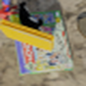
Frame 6 · instance 0 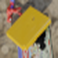
Frame 20 · instance 1
System Score Threshold Decision C_camera_geometry · reviewed0.8668 0.7944 match · error D_pose_aligned_geometry0.6423 0.8433 non-match · correct
Truth: non-match Pair: 8046546595c462a6320c7fc3 Video: 8799
Gap: 14 (long) Difficulty: easy
Dynamics: dynamic-static Visibility: 2358/1670
Mask area: 592/417 px Depth pixels: 592/417
Camera translation: 0.315 Rotation: 2.824°
Normalized translation: 0.0270
#03 MOVI_E C false positive high motion
Matched Category Distractor
Matched-category, similar-scale distractor remains compatible in appearance and geometry.
Frame 12 · instance 8 Frame 18 · instance 6
System Score Threshold Decision C_camera_geometry · reviewed0.9362 0.7944 match · error D_pose_aligned_geometry0.8872 0.8433 match · error
Truth: non-match Pair: 41b348d160a5bf6cfc8236d7 Video: 8932
Gap: 6 (medium) Difficulty: hard
Dynamics: static-static Visibility: 471/447
Mask area: 112/108 px Depth pixels: 112/108
Camera translation: 0.808 Rotation: 8.139°
Normalized translation: 0.0790
#04 MOVI_E D false positive medium motion
Occlusion Truncated Mask
Low support or an image-edge-truncated mask hides cues that separate these objects.
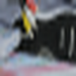
Frame 11 · instance 5 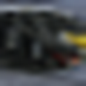
Frame 17 · instance 10
System Score Threshold Decision C_camera_geometry0.9657 0.7944 match · error D_pose_aligned_geometry · reviewed0.9157 0.8433 match · error
Truth: non-match Pair: b32f54423ef3e8ab2ec492fa Video: 8070
Gap: 6 (medium) Difficulty: easy
Dynamics: dynamic-static Visibility: 926/205
Mask area: 229/50 px Depth pixels: 229/50
Camera translation: 0.665 Rotation: 4.649°
Normalized translation: 0.0799
#05 MOVI_E D false positive low motion
Matched Category Distractor
Matched-category, similar-scale distractor remains compatible in appearance and geometry.
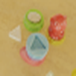
Frame 4 · instance 0 Frame 11 · instance 4
System Score Threshold Decision C_camera_geometry0.7359 0.7944 non-match · correct D_pose_aligned_geometry · reviewed0.8979 0.8433 match · error
Truth: non-match Pair: 77461af8237a0d9ccc426bae Video: 70
Gap: 7 (medium) Difficulty: hard
Dynamics: dynamic-static Visibility: 2303/1654
Mask area: 576/414 px Depth pixels: 576/414
Camera translation: 0.084 Rotation: 0.581°
Normalized translation: 0.0074
#06 MOVI_E D false positive high motion
Matched Category Distractor
Matched-category, similar-scale distractor remains compatible in appearance and geometry.
Frame 0 · instance 2 Frame 19 · instance 10
System Score Threshold Decision C_camera_geometry0.7844 0.7944 non-match · correct D_pose_aligned_geometry · reviewed0.8583 0.8433 match · error
Truth: non-match Pair: 2506686c1d87b8036c6bdbf8 Video: 2735
Gap: 19 (long) Difficulty: hard
Dynamics: static-static Visibility: 309/202
Mask area: 75/48 px Depth pixels: 75/48
Camera translation: 2.353 Rotation: 13.351°
Normalized translation: 0.2317
#07 MOVI_E C false negative low motion
Long Gap Motion
Object motion or a long temporal gap shifts appearance and visible geometry below threshold.
Frame 12 · instance 2 Frame 15 · instance 2
System Score Threshold Decision C_camera_geometry · reviewed0.7692 0.7944 non-match · error D_pose_aligned_geometry0.8249 0.8433 non-match · error
Truth: match Pair: 294210d808502c8f526a3472 Video: 1912
Gap: 3 (short) Difficulty: positive
Dynamics: dynamic-dynamic Visibility: 1175/1488
Mask area: 299/377 px Depth pixels: 299/377
Camera translation: 0.040 Rotation: 0.191°
Normalized translation: 0.0041
#08 MOVI_E C false negative high motion
Camera Motion Misalignment
Camera-space geometry drifts under high camera motion while pose-aligned D remains correct.
Frame 0 · instance 6 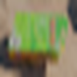
Frame 10 · instance 6
System Score Threshold Decision C_camera_geometry · reviewed0.5287 0.7944 non-match · error D_pose_aligned_geometry0.9439 0.8433 match · correct
Truth: match Pair: 073a1622c6cde7cfb87b511b Video: 6015
Gap: 10 (medium) Difficulty: positive
Dynamics: dynamic-dynamic Visibility: 656/495
Mask area: 170/125 px Depth pixels: 170/125
Camera translation: 1.184 Rotation: 4.911°
Normalized translation: 0.1302
#09 MOVI_E C false negative high motion
Camera Motion Misalignment
Camera-space geometry drifts under high camera motion while pose-aligned D remains correct.
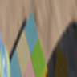
Frame 1 · instance 1 Frame 22 · instance 1
System Score Threshold Decision C_camera_geometry · reviewed0.5275 0.7944 non-match · error D_pose_aligned_geometry0.8464 0.8433 match · correct
Truth: match Pair: e38315516d290d47c84b534f Video: 6015
Gap: 21 (long) Difficulty: positive
Dynamics: static-static Visibility: 1143/3386
Mask area: 275/840 px Depth pixels: 275/840
Camera translation: 2.487 Rotation: 8.895°
Normalized translation: 0.2541
#10 MOVI_E D false negative low motion
Biased Depth Estimate
Visible-surface depth or centroid changes unusually strongly across the two observations.
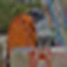
Frame 14 · instance 2 Frame 18 · instance 2
System Score Threshold Decision C_camera_geometry0.4703 0.7944 non-match · error D_pose_aligned_geometry · reviewed0.6468 0.8433 non-match · error
Truth: match Pair: 3980ddbfac44fa38a2655fe0 Video: 5037
Gap: 4 (short) Difficulty: positive
Dynamics: static-static Visibility: 466/1839
Mask area: 114/459 px Depth pixels: 114/459
Camera translation: 0.234 Rotation: 1.078°
Normalized translation: 0.0230
#11 MOVI_E D false negative low motion
Biased Depth Estimate
Visible-surface depth or centroid changes unusually strongly across the two observations.
Frame 7 · instance 10 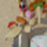
Frame 11 · instance 10
System Score Threshold Decision C_camera_geometry0.9124 0.7944 match · correct D_pose_aligned_geometry · reviewed0.6374 0.8433 non-match · error
Truth: match Pair: 886e30eb3c7569fbd954c54c Video: 2470
Gap: 4 (short) Difficulty: positive
Dynamics: dynamic-dynamic Visibility: 835/806
Mask area: 205/193 px Depth pixels: 205/193
Camera translation: 0.212 Rotation: 1.712°
Normalized translation: 0.0188
#12 MOVI_E D false negative high motion
Pose Transform Error
Possible pose-transform or visible-surface instability makes D miss a pair that C retains.
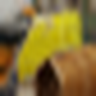
Frame 8 · instance 5 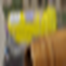
Frame 22 · instance 5
System Score Threshold Decision C_camera_geometry0.8051 0.7944 match · correct D_pose_aligned_geometry · reviewed0.4836 0.8433 non-match · error
Truth: match Pair: ef05607be4b81db472c8208c Video: 6378
Gap: 14 (long) Difficulty: positive
Dynamics: static-static Visibility: 307/405
Mask area: 79/105 px Depth pixels: 79/105
Camera translation: 1.200 Rotation: 5.842°
Normalized translation: 0.1060
#13 MOVI_D C false positive zero motion
Ambiguous Appearance
Different-category objects still produce an unusually match-like appearance and geometry score.
Frame 2 · instance 2 Frame 15 · instance 4
System Score Threshold Decision C_camera_geometry · reviewed0.7674 0.6962 match · error D_pose_aligned_geometry0.9768 0.7905 match · error
Truth: non-match Pair: b141ac19d142257407e7288e Video: 3916
Gap: 13 (long) Difficulty: easy
Dynamics: dynamic-static Visibility: 3148/1029
Mask area: 785/260 px Depth pixels: 785/260
Camera translation: 0.000 Rotation: 0.000°
Normalized translation: 0.0000
#14 MOVI_D C false positive zero motion
Matched Category Distractor
Matched-category, similar-scale distractor remains compatible in appearance and geometry.
Frame 5 · instance 4 Frame 20 · instance 2
System Score Threshold Decision C_camera_geometry · reviewed0.8732 0.6962 match · error D_pose_aligned_geometry0.9627 0.7905 match · error
Truth: non-match Pair: 2d06983d96e7bd29aa6f5de4 Video: 3702
Gap: 15 (long) Difficulty: hard
Dynamics: dynamic-static Visibility: 4174/3413
Mask area: 1042/860 px Depth pixels: 1042/860
Camera translation: 0.000 Rotation: 0.000°
Normalized translation: 0.0000
#15 MOVI_D C false positive zero motion
Matched Category Distractor
Matched-category, similar-scale distractor remains compatible in appearance and geometry.
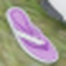
Frame 16 · instance 7 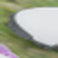
Frame 21 · instance 5
System Score Threshold Decision C_camera_geometry · reviewed0.8790 0.6962 match · error D_pose_aligned_geometry0.7500 0.7905 non-match · correct
Truth: non-match Pair: e41fd785bad32aa26b835a20 Video: 8337
Gap: 5 (short) Difficulty: hard
Dynamics: static-static Visibility: 997/1223
Mask area: 250/300 px Depth pixels: 250/300
Camera translation: 0.000 Rotation: 0.000°
Normalized translation: 0.0000
#16 MOVI_D D false positive zero motion
Occlusion Truncated Mask
Low support or an image-edge-truncated mask hides cues that separate these objects.
Frame 1 · instance 4 Frame 8 · instance 10
System Score Threshold Decision C_camera_geometry0.4180 0.6962 non-match · correct D_pose_aligned_geometry · reviewed0.7943 0.7905 match · error
Truth: non-match Pair: c10b3db3e2b0044b10e3b7f4 Video: 9403
Gap: 7 (medium) Difficulty: easy
Dynamics: dynamic-static Visibility: 752/411
Mask area: 194/102 px Depth pixels: 194/102
Camera translation: 0.000 Rotation: 0.000°
Normalized translation: 0.0000
#17 MOVI_D D false positive zero motion
Occlusion Truncated Mask
Low support or an image-edge-truncated mask hides cues that separate these objects.
Frame 6 · instance 6 Frame 11 · instance 4
System Score Threshold Decision C_camera_geometry0.9036 0.6962 match · error D_pose_aligned_geometry · reviewed0.9187 0.7905 match · error
Truth: non-match Pair: 0afe3711d76ab6cd2ef40406 Video: 7200
Gap: 5 (short) Difficulty: easy
Dynamics: static-static Visibility: 420/632
Mask area: 104/160 px Depth pixels: 104/160
Camera translation: 0.000 Rotation: 0.000°
Normalized translation: 0.0000
#18 MOVI_D D false positive zero motion
Matched Category Distractor
Matched-category, similar-scale distractor remains compatible in appearance and geometry.
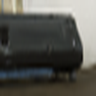
Frame 8 · instance 1 Frame 18 · instance 0
System Score Threshold Decision C_camera_geometry0.9406 0.6962 match · error D_pose_aligned_geometry · reviewed0.8892 0.7905 match · error
Truth: non-match Pair: 05db8091b8aaa9278833eb14 Video: 3188
Gap: 10 (medium) Difficulty: hard
Dynamics: static-static Visibility: 2745/4467
Mask area: 688/1110 px Depth pixels: 688/1110
Camera translation: 0.000 Rotation: 0.000°
Normalized translation: 0.0000
#19 MOVI_D C false negative zero motion
Biased Depth Estimate
Visible-surface depth or centroid changes unusually strongly across the two observations.
Frame 9 · instance 4 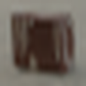
Frame 20 · instance 4
System Score Threshold Decision C_camera_geometry · reviewed0.0076 0.6962 non-match · error D_pose_aligned_geometry0.0102 0.7905 non-match · error
Truth: match Pair: 62fe3027c0730fc234380992 Video: 4199
Gap: 11 (medium) Difficulty: positive
Dynamics: dynamic-dynamic Visibility: 657/559
Mask area: 165/142 px Depth pixels: 165/142
Camera translation: 0.000 Rotation: 0.000°
Normalized translation: 0.0000
#20 MOVI_D C false negative zero motion
Long Gap Motion
Object motion or a long temporal gap shifts appearance and visible geometry below threshold.
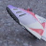
Frame 19 · instance 2 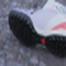
Frame 22 · instance 2
System Score Threshold Decision C_camera_geometry · reviewed0.5485 0.6962 non-match · error D_pose_aligned_geometry0.7379 0.7905 non-match · error
Truth: match Pair: a813444b4926781cf1f689f5 Video: 7175
Gap: 3 (short) Difficulty: positive
Dynamics: dynamic-dynamic Visibility: 3731/3807
Mask area: 928/945 px Depth pixels: 928/945
Camera translation: 0.000 Rotation: 0.000°
Normalized translation: 0.0000
#21 MOVI_D C false negative zero motion
Long Gap Motion
Object motion or a long temporal gap shifts appearance and visible geometry below threshold.
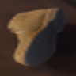
Frame 0 · instance 2 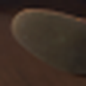
Frame 19 · instance 2
System Score Threshold Decision C_camera_geometry · reviewed0.4778 0.6962 non-match · error D_pose_aligned_geometry0.4590 0.7905 non-match · error
Truth: match Pair: 1898d0539a07088953a69103 Video: 4262
Gap: 19 (long) Difficulty: positive
Dynamics: static-static Visibility: 2514/1546
Mask area: 625/383 px Depth pixels: 625/383
Camera translation: 0.000 Rotation: 0.000°
Normalized translation: 0.0000
#22 MOVI_D D false negative zero motion
Occlusion Truncated Mask
Occlusion or image-edge truncation removes reliable same-instance surface evidence.
Frame 5 · instance 9 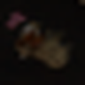
Frame 8 · instance 9
System Score Threshold Decision C_camera_geometry0.0684 0.6962 non-match · error D_pose_aligned_geometry · reviewed0.1145 0.7905 non-match · error
Truth: match Pair: 6f5b326004394a9682aa03a0 Video: 9599
Gap: 3 (short) Difficulty: positive
Dynamics: dynamic-dynamic Visibility: 427/317
Mask area: 107/78 px Depth pixels: 107/78
Camera translation: 0.000 Rotation: 0.000°
Normalized translation: 0.0000
#23 MOVI_D D false negative zero motion
Biased Depth Estimate
Visible-surface depth or centroid changes unusually strongly across the two observations.
Frame 5 · instance 5 Frame 11 · instance 5
System Score Threshold Decision C_camera_geometry0.3514 0.6962 non-match · error D_pose_aligned_geometry · reviewed0.1869 0.7905 non-match · error
Truth: match Pair: e3f888374fed58012b5263c8 Video: 8932
Gap: 6 (medium) Difficulty: positive
Dynamics: static-static Visibility: 148/955
Mask area: 37/243 px Depth pixels: 37/243
Camera translation: 0.000 Rotation: 0.000°
Normalized translation: 0.0000
#24 MOVI_D D false negative zero motion
Long Gap Motion
Object motion or a long temporal gap shifts appearance and visible geometry below threshold.
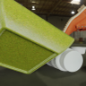
Frame 3 · instance 0 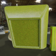
Frame 22 · instance 0
System Score Threshold Decision C_camera_geometry0.6734 0.6962 non-match · error D_pose_aligned_geometry · reviewed0.7877 0.7905 non-match · error
Truth: match Pair: 0fb47da97b7a62e9f4acdd33 Video: 8589
Gap: 19 (long) Difficulty: positive
Dynamics: static-static Visibility: 16522/24687
Mask area: 4156/6174 px Depth pixels: 4156/6174
Camera translation: 0.000 Rotation: 0.000°
Normalized translation: 0.0000